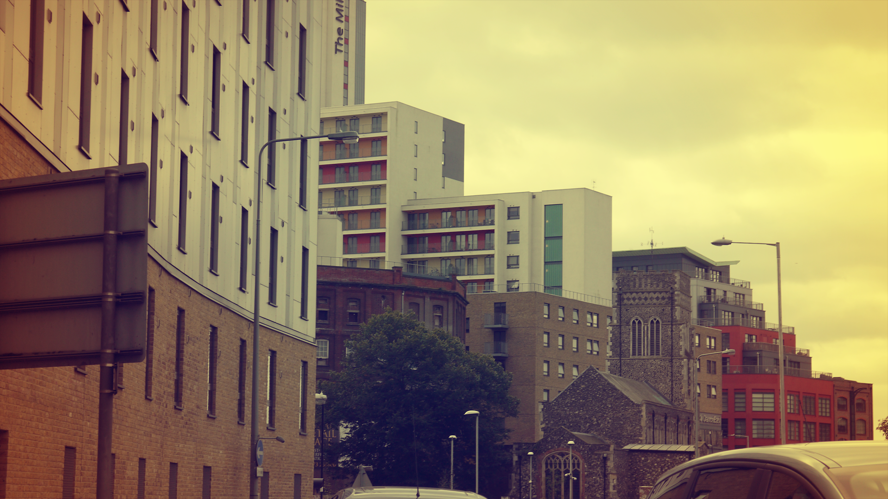
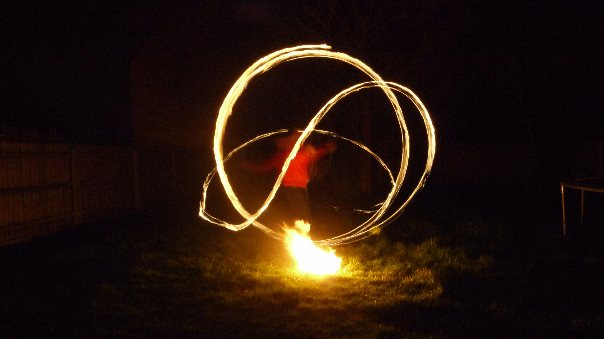

Luke Brown
Photography
The creative environment belonging to two years worth of photography coursework for viewing pleasure.
The creative environment belonging to two years worth of photography coursework for viewing pleasure.